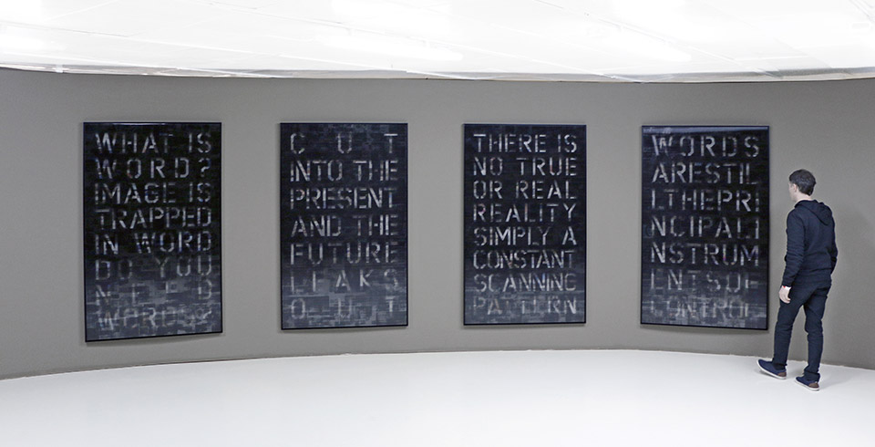

Art 321 Evan Argenal - Assignment 1 Solution
Artist: Pascal Dombis
Pascal Dombis is a visual artist based in Paris who focuses on language as much as on perception. He is most known for his excessive use of simple algorithmic rules. He has been using computer algorithms to produce excessive repetitions and combinations fo simple processes that create unpredictable, unstable, and dynamic visual forms for more than two decades. He challenges to viewer to develop multiple viewpoints and renew their visual experience to art by exploiting the paradoxical co-existence of orderly control and chaotic aletory forces in his artworks.
Dombis' work has been shown in numerous exhibitions around the world and is part of several public and private collections.
In 2005, Dombis started to work on spam proliferations and realized several installations at Château de Linardié in Senouillac.
In 2010, Dombis realized Text(e)~Fil(e)s, a monumental 252 meter long floor ribbon commissioned by the French Ministry of Culture for the Palais-Royal in Paris.
In 2013, Dombis participated in Noise, an official collateral show of the 55th Venice Biennale of Art, based on Joseph Nechvatal’s book Immersion Into Noise.
At the end of year 2015, Pascal Dombis, in collaboration with Gil Percal, installed in Perth, Australia, Irrational Geometrics, an monumental installation of
digitally printed glass and LED lighting, bringing a European perceptive to the city landscape.

Meta-Google, 2015-2018
Meta-Google confronts William Burroughs’ artistic heritage with Google, the symbol company of today’s soft global digital capitalism,
in order to question our relationship with pictorial digital proliferation.
This Meta-Google series tends to create a mirror-image of its own disappearance, a meta-image that conveys the feeling that behind each
image there is something that is about to disappear. Hence, an echo to Burroughs’ iconoclasm:
Rub out the word, word begets image, image is Virus.